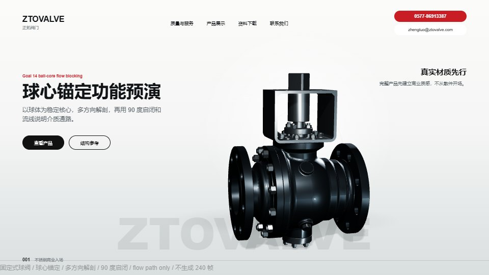
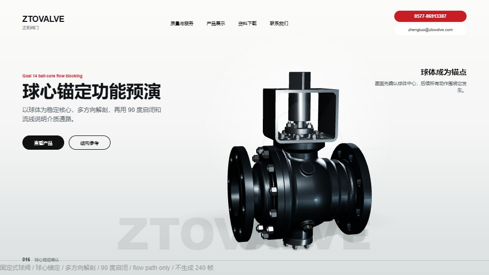
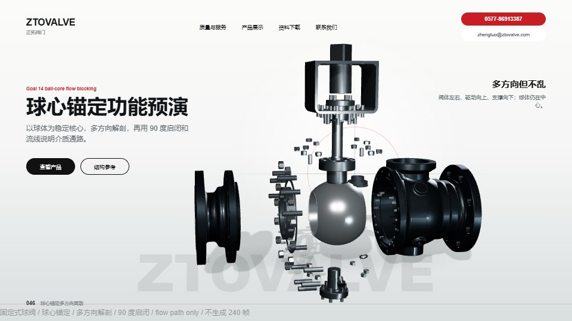
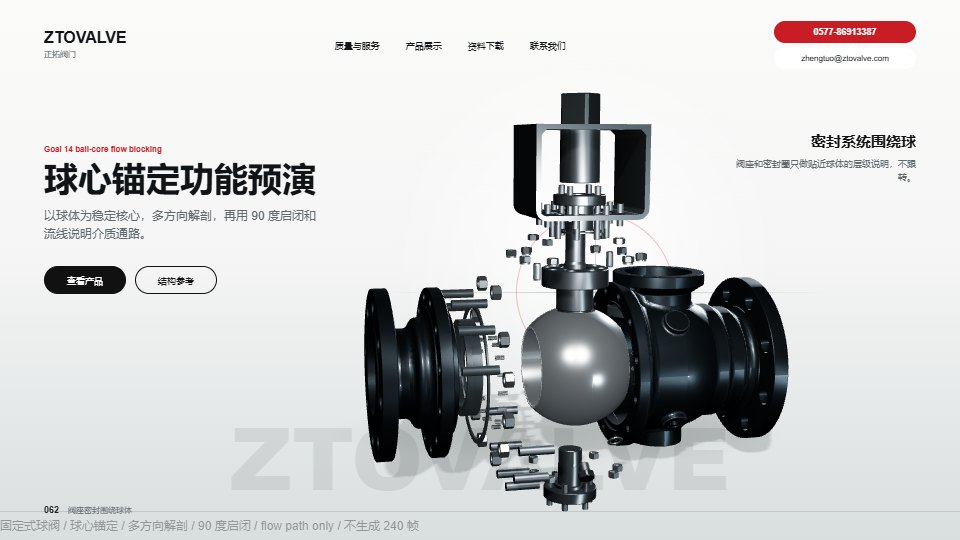
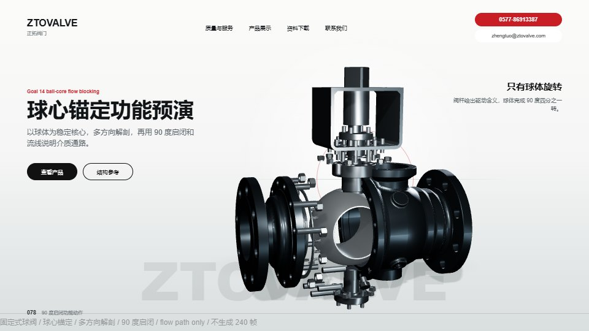
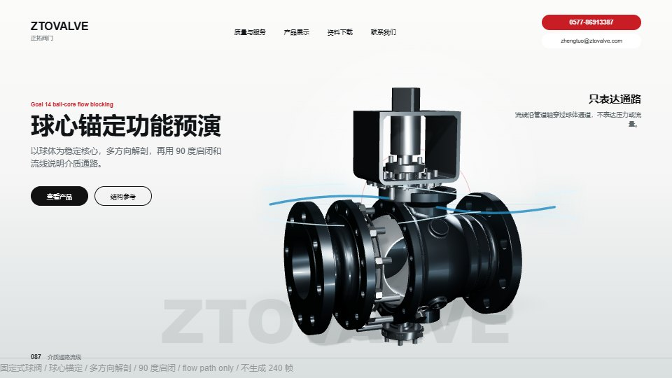
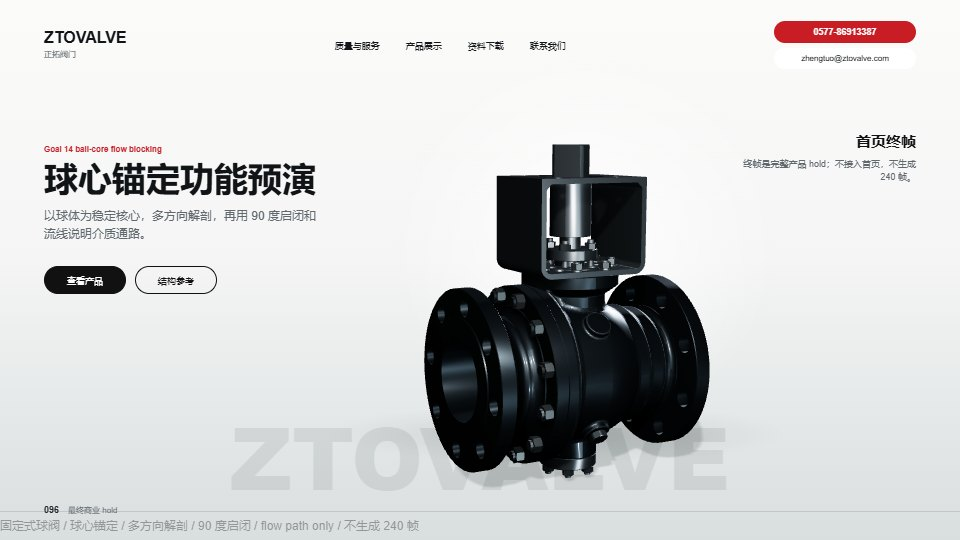

球心秩序
所有结构动作围绕球体发生，球体是画面锚点和功能锚点。
功能动作
90 度四分之一转只给真实球芯单件，避免把阀座、密封、支撑件、壳体、小五金拍成错误随动件。
真值边界
流线只表达通路，不表达压力、流量、零泄漏、DBB/DIB 或材料性能。
通过条件
材质像真实不锈钢，球体稳定，多方向离散不乱，启闭无明显穿模，流线不过度科幻。
如果通过
进入高清 still lookdev：完整产品、球体核心、多方向解剖三张材质图，再讨论正式帧序列。
仍需客户确认
球孔方向、真实开闭方向、随动组、固定轴是否不得旋转，以及最终是否允许保留流线。